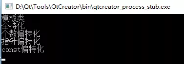
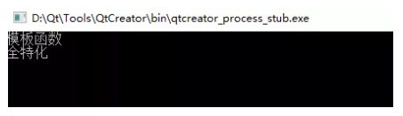

<!DOCTYPE html>


<html lang="zh-CN">
  

    <head>
      <meta charset="utf-8" />
        
      <meta name="description" content="Over top clear mind" />
      
      <meta
        name="viewport"
        content="width=device-width, initial-scale=1, maximum-scale=1"
      />
      <title>CPP模板学习 |  摸鱼且很菜blog</title>
  <meta name="generator" content="hexo-theme-ayer">
      
      <link rel="shortcut icon" href="/yu_head.gif" />
       
<link rel="stylesheet" href="/dist/main.css">

      
<link rel="stylesheet" href="/css/fonts/remixicon.css">

      
<link rel="stylesheet" href="/css/custom.css">
 
      <script src="https://cdn.staticfile.org/pace/1.2.4/pace.min.js"></script>
       
 

      <link
        rel="stylesheet"
        href="https://cdn.jsdelivr.net/npm/@sweetalert2/theme-bulma@5.0.1/bulma.min.css"
      />
      <script src="https://cdn.jsdelivr.net/npm/sweetalert2@11.0.19/dist/sweetalert2.min.js"></script>

      <!-- mermaid -->
      
      <style>
        .swal2-styled.swal2-confirm {
          font-size: 1.6rem;
        }
      </style>
    </head>
  </html>
</html>


<body>
  <div id="app">
    
      <canvas class="fireworks"></canvas>
      <style>
        .fireworks {
          position: fixed;
          left: 0;
          top: 0;
          z-index: 99999;
          pointer-events: none;
        }
      </style>
      
      
    <main class="content on">
      <section class="outer">
  <article
  id="post-CPP模板学习"
  class="article article-type-post"
  itemscope
  itemprop="blogPost"
  data-scroll-reveal
>
  <div class="article-inner">
    
    <header class="article-header">
       
<h1 class="article-title sea-center" style="border-left:0" itemprop="name">
  CPP模板学习
</h1>
 

      
    </header>
     
    <div class="article-meta">
      <a href="/2022/01/13/CPP%E6%A8%A1%E6%9D%BF%E5%AD%A6%E4%B9%A0/" class="article-date">
  <time datetime="2022-01-13T15:26:54.000Z" itemprop="datePublished">2022-01-13</time>
</a>   
<div class="word_count">
    <span class="post-time">
        <span class="post-meta-item-icon">
            <i class="ri-quill-pen-line"></i>
            <span class="post-meta-item-text"> 字数统计:</span>
            <span class="post-count">4.3k</span>
        </span>
    </span>

    <span class="post-time">
        &nbsp; | &nbsp;
        <span class="post-meta-item-icon">
            <i class="ri-book-open-line"></i>
            <span class="post-meta-item-text"> 阅读时长≈</span>
            <span class="post-count">17 分钟</span>
        </span>
    </span>
</div>
 
    </div>
      
    <div class="tocbot"></div>


  
    <div class="article-entry" itemprop="articleBody">
       
  <ol>
<li><p>模板是 C++ 支持参数化多态的工具，使用模板可以使用户为类或者函数声明一种一般模式。</p>
</li>
<li><p>C++ 的标准库提供许多有用的函数大多结合了模板的观念，如 STL 以及 IO Stream。</p>
</li>
</ol>
<p>模板是一种对类型进行参数化的工具；通常有两种形式：函数模板和类模板:</p>
<ul>
<li>函数模板 针对仅参数类型不同的函数；</li>
<li>类模板 针对仅数据成员和成员函数类型不同的类.</li>
</ul>
<p>使用模板的目的就是能够让程序员编写与类型无关的代码.</p>
<span id="more"></span>
<h2 id="函数模板"><a href="#函数模板" class="headerlink" title="函数模板"></a>函数模板</h2><figure class="highlight plaintext"><table><tr><td class="gutter"><pre><span class="line">1</span><br><span class="line">2</span><br><span class="line">3</span><br><span class="line">4</span><br><span class="line">5</span><br><span class="line">6</span><br></pre></td><td class="code"><pre><span class="line"> template &lt;typename 形参名，typename 形参名，......&gt; </span><br><span class="line"> 返回类型 函数名(参数列表)</span><br><span class="line"></span><br><span class="line">&#123;</span><br><span class="line">      函数体</span><br><span class="line">&#125;</span><br></pre></td></tr></table></figure>
<ul>
<li><p>template 和 class 是关键字，class 可以用 typename  关键字代替，在这里 typename  和 class 没区别，</p>
</li>
<li><p>&lt;&gt; 括号中的参数叫模板形参，模板形参和函数形参很相像，模板形参不能为空。</p>
</li>
<li>模板形参需要调用该模板函数时提供的<strong>模板实参来初始化模板形参</strong></li>
<li>一旦编译器确定了实际的模板实参类型就称他<strong>实例化了函数模板的一个实例</strong>。</li>
</ul>
<figure class="highlight plaintext"><table><tr><td class="gutter"><pre><span class="line">1</span><br></pre></td><td class="code"><pre><span class="line">template &lt;class T&gt; void swap(T&amp; a, T&amp; b)&#123;&#125;，</span><br></pre></td></tr></table></figure>
<p>当调用这样的模板函数时类型T就会被被调用时的类型所代替，比如 swap(a,b) 其中 a 和 b 是 int  型，这时模板函数 swap  中的形参 T  就会被 int  所代替，模板函数就变为 swap(int &amp;a, int &amp;b)。而当 swap(c,d) 其中 c 和 d 是 double 类型时，模板函数会被替换为 swap(double &amp;a, double &amp;b)，这样就实现了函数的实现与类型无关的代码。</p>
<p>注意：对于函数模板而言不存在 h(int,int) 这样的调用，不能在函数调用的参数中指定模板形参的类型，对函数模板的调用应使用实参推演来进行，即只能进行 h(2,3) 这样的调用，或者 int a, b; h(a,b)。</p>
<h2 id="类模板"><a href="#类模板" class="headerlink" title="类模板"></a>类模板</h2><p>类模板的格式为：</p>
<figure class="highlight plaintext"><table><tr><td class="gutter"><pre><span class="line">1</span><br><span class="line">2</span><br></pre></td><td class="code"><pre><span class="line">template&lt;class  形参名，class 形参名，…&gt;</span><br><span class="line">class 类名&#123; ... &#125;;</span><br></pre></td></tr></table></figure>
<p>类模板和函数模板都是以 template 开始后接模板形参列表组成，模板形参不能为空，一但声明了类模板就可以用类模板的形参名声明类中的成员变量和成员函数，即可以在类中使用内置类型的地方都可以使用模板形参名来声明。</p>
<figure class="highlight plaintext"><table><tr><td class="gutter"><pre><span class="line">1</span><br><span class="line">2</span><br><span class="line">3</span><br><span class="line">4</span><br><span class="line">5</span><br><span class="line">6</span><br><span class="line">7</span><br></pre></td><td class="code"><pre><span class="line">template&lt;class T&gt; class A</span><br><span class="line">  &#123;</span><br><span class="line">       public: </span><br><span class="line">       T a;</span><br><span class="line">       T b; </span><br><span class="line">       T hy(T c, T &amp;d);</span><br><span class="line">  &#125;;</span><br></pre></td></tr></table></figure>
<p>在类 A 中声明了两个类型为T的成员变量 a 和 b，还声明了一个返回类型为 T 带两个参数类型为 T 的函数 hy。</p>
<blockquote>
<p>类模板对象的创建：比如一个模板类 A，则使用类模板创建对象的方法为 A m ;在类 A 后面跟上一个 &lt;&gt; 尖括号并在里面填上相应的类型，这样的话类 A 中凡是用到模板形参的地方都会被 int 所代替。当类模板有两个模板形参时创建对象的方法为 A<int, double> m; 类型之间用逗号隔开。</p>
</blockquote>
<p><strong>在类模板外部定义成员函数</strong>的方法为：</p>
<figure class="highlight plaintext"><table><tr><td class="gutter"><pre><span class="line">1</span><br></pre></td><td class="code"><pre><span class="line">template&lt;模板形参列表&gt; 函数返回类型 类名&lt;模板形参名&gt;::函数名(参数列表)&#123;函数体&#125;</span><br></pre></td></tr></table></figure>
<p>比如有两个模板形参 T1，T2 的类 A 中含有一个 void h() 函数，则定义该函数的语法为：</p>
<figure class="highlight plaintext"><table><tr><td class="gutter"><pre><span class="line">1</span><br></pre></td><td class="code"><pre><span class="line">template&lt;class T1,class T2&gt; void A&lt;T1,T2&gt;::h()&#123;&#125;。</span><br></pre></td></tr></table></figure>
<p>注意：当在类外面定义类的成员时 template 后面的模板形参应与要定义的类的模板形参一致。模板的声明或定义只能在全局，命名空间或类范围内进行。即不能在局部范围，函数内进行，比如不能在 main 函数中声明或定义一个模板。</p>
<h2 id="模板的非类型形参"><a href="#模板的非类型形参" class="headerlink" title="模板的非类型形参"></a>模板的非类型形参</h2><ol>
<li>非类型模板形参：模板的非类型形参也就是内置类型形参，如 template<class T, int a> class B{} ; 其中int a就是非类型的模板形参。</li>
<li>非类型形参在模板定义的内部是常量值，也就是说<strong>非类型形参在模板的内部是常量</strong>。</li>
<li><strong>非类型模板的形参只能是整型，指针和引用</strong>，像 double，String, String <em>* 这样的类型是不允许的。但是 double &amp;，double </em>，对象的引用或指针是正确的。</li>
<li><strong>调用非类型模板形参的实参必须是一个常量表达式</strong>，即他必须能在编译时计算出结果</li>
<li>注意：任何局部对象，局部变量，局部对象的地址，局部变量的地址都不是一个常量表达式，都不能用作非类型模板形参的实参。</li>
<li><strong>全局变量的地址或引用</strong>，<strong>全局对象的地址或引用</strong> <strong>const 类型变量</strong>是常量表达式，可以用作非类型模板形参的实参。</li>
<li><strong>sizeof 表达式的结果</strong>是一个常量表达式，也能用作非类型模板形参的实参。</li>
<li>当模板的形参是整型时调用该模板时的实参必须是整型的，且在编译期间是常量，比如 template <class T, int a> class A{}; 如果有 int b，这时 A<int, b> m;将出错，因为 b 不是常量，如果 const int b，这时 A<int, b> m; 就是正确的，因为这时 b 是常量。</li>
<li>非类型形参一般不应用于函数模板中，比如有函数模板 template<class T, int a> void h(T b){} ，若使用 h(2) 调用会出现无法为非类型形参 a 推演出参数的错误，对这种模板函数可以用显示模板实参来解决，如用 h<int, 3>(2) 这样就把非类型形参 a 设置为整数 3。显示模板实参在后面介绍。</li>
<li>非类型模板形参的形参和实参间所允许的转换:<ul>
<li>允许从数组到指针，从函数到指针的转换。如：template <int *a> class A{}; int b[1]; A<b> m;即数组到指针的转换。</li>
<li>const 修饰符的转换。如：template<const int *a> class A{}; int b; A&lt;&amp;b&gt; m; 即从 int <em> 到 const int </em> 的转换。</li>
<li>提升转换。如：template<int a> class A{}; const short b=2; A<b> m; 即从 short 到 int 的提升转换</li>
<li>整值转换。如：template<unsigned int a> class A{}; A<3> m; 即从 int  到 unsigned int 的转换。</li>
<li>常规转换。</li>
</ul>
</li>
</ol>
<h2 id="类模板的默认模板类型形参"><a href="#类模板的默认模板类型形参" class="headerlink" title="类模板的默认模板类型形参"></a>类模板的默认模板类型形参</h2><ol>
<li><p>可以为类模板的类型形参提供默认值，但不能为函数模板的类型形参提供默认值。函数模板和类模板都可以为模板的非类型形参提供默认值。</p>
</li>
<li><p>类模板的类型形参默认值形式为：template<class T1, class T2=int> class A{};为第二个模板类型形参T2提供int型的默认值。</p>
</li>
<li><p>类模板类型形参默认值和函数的默认参数一样，如果有多个类型形参则从<strong>第一个形参设定了默认值之后</strong>的所有模板形参都要设定默认值，比如</p>
<figure class="highlight plaintext"><table><tr><td class="gutter"><pre><span class="line">1</span><br></pre></td><td class="code"><pre><span class="line">template&lt;class T1=int, class T2&gt;class A&#123;&#125;;</span><br></pre></td></tr></table></figure>
<p>就是错误的，因为T1给出了默认值，而T2没有设定。</p>
</li>
<li><p>在类模板的外部定义类中的成员时 template 后的<strong>形参表应省略默认的形参类型</strong>。</p>
<figure class="highlight plaintext"><table><tr><td class="gutter"><pre><span class="line">1</span><br></pre></td><td class="code"><pre><span class="line">template&lt;class  T1, class T2=int&gt; class A&#123;public: void h();&#125;; </span><br></pre></td></tr></table></figure>
<p> 定义方法为：</p>
<figure class="highlight plaintext"><table><tr><td class="gutter"><pre><span class="line">1</span><br></pre></td><td class="code"><pre><span class="line">template&lt;class T1,class T2&gt; void A&lt;T1,T2&gt;::h()&#123;&#125;</span><br></pre></td></tr></table></figure>
</li>
</ol>
<h2 id="模板实例化"><a href="#模板实例化" class="headerlink" title="模板实例化"></a>模板实例化</h2><blockquote>
<p>模板的实例化指函数模板（类模板）生成模板函数（模板类）的过程。</p>
<p>对于函数模板而言，模板实例化之后，会生成一个真正的函数。</p>
<p>类模板经过实例化之后，只是完成了类的定义，模板类的成员函数需要到调用时才会被初始化。模板的实例化分为隐式实例化和显示实例化。</p>
</blockquote>
<p>C++ 只有模板显式实例化 (explicit instantiation), 隐式实例化 (implicit instantiation) ,特化 (specialization,也译作具体化，偏特化)。</p>
<p>首先考虑如下模板函数代码:</p>
<figure class="highlight plaintext"><table><tr><td class="gutter"><pre><span class="line">1</span><br><span class="line">2</span><br><span class="line">3</span><br><span class="line">4</span><br><span class="line">5</span><br></pre></td><td class="code"><pre><span class="line">template &lt;typename T&gt;  </span><br><span class="line">void swap(T &amp;a, T &amp;b)</span><br><span class="line">&#123;  </span><br><span class="line">...  </span><br><span class="line">&#125;  </span><br></pre></td></tr></table></figure>
<h3 id="隐式实例化"><a href="#隐式实例化" class="headerlink" title="隐式实例化"></a>隐式实例化</h3><p>模板函数不是真正的函数定义，他只是如其名提供一个模板，<strong>模板只有在运行时才会生成相应的实例</strong>，隐式实例化就是这种情况:</p>
<figure class="highlight plaintext"><table><tr><td class="gutter"><pre><span class="line">1</span><br><span class="line">2</span><br><span class="line">3</span><br><span class="line">4</span><br><span class="line">5</span><br></pre></td><td class="code"><pre><span class="line">int main()&#123;  </span><br><span class="line">    ....  </span><br><span class="line">    swap&lt;int&gt;(a,b);  </span><br><span class="line">    ....  </span><br><span class="line">&#125;  </span><br></pre></td></tr></table></figure>
<p><strong>它会在运行到这里的时候才生成相应的实例，很显然的影响效率</strong> 这里顺便提一下 swap(a,b) ;中的<int>是可选的,因为<strong>编译器可以根据函数参数类型自动进行判断</strong>,也就是说如果编译器不不能自动判断的时候这个就是必要的。</p>
<h3 id="简介调用函数完成模板实例化"><a href="#简介调用函数完成模板实例化" class="headerlink" title="简介调用函数完成模板实例化"></a>简介调用函数完成模板实例化</h3><blockquote>
<p>将函数入口地址传给一个函数指针，通过函数指针完成函数调用。如果传递给函数指针不是一个真正的函数，那么编译器就会寻找同名的函数模板进行参数推演，进而完成函数模板的实例化。</p>
</blockquote>
<figure class="highlight cpp"><table><tr><td class="gutter"><pre><span class="line">1</span><br><span class="line">2</span><br><span class="line">3</span><br><span class="line">4</span><br><span class="line">5</span><br><span class="line">6</span><br><span class="line">7</span><br><span class="line">8</span><br><span class="line">9</span><br><span class="line">10</span><br><span class="line">11</span><br><span class="line">12</span><br><span class="line">13</span><br><span class="line">14</span><br></pre></td><td class="code"><pre><span class="line"><span class="meta">#<span class="meta-keyword">include</span> <span class="meta-string">&lt;iostream&gt;</span></span></span><br><span class="line"><span class="keyword">using</span> <span class="keyword">namespace</span> std;</span><br><span class="line"><span class="keyword">template</span> &lt;<span class="keyword">typename</span> T&gt; <span class="function"><span class="keyword">void</span> <span class="title">func</span><span class="params">(T t)</span></span>&#123;</span><br><span class="line">    cout&lt;&lt;t&lt;&lt;endl;</span><br><span class="line">&#125;</span><br><span class="line"></span><br><span class="line"><span class="comment">//入参为函数指针</span></span><br><span class="line"><span class="function"><span class="keyword">void</span> <span class="title">invoke</span><span class="params">(<span class="keyword">void</span> (*p)(<span class="keyword">int</span>))</span></span>&#123;</span><br><span class="line">    <span class="keyword">int</span> num=<span class="number">10</span>;</span><br><span class="line">    <span class="built_in">p</span>(num);</span><br><span class="line">&#125;</span><br><span class="line"><span class="function"><span class="keyword">int</span> <span class="title">main</span><span class="params">()</span></span>&#123;</span><br><span class="line">    <span class="built_in">invoke</span>(func);</span><br><span class="line">&#125;</span><br></pre></td></tr></table></figure>
<h3 id="显式实例化"><a href="#显式实例化" class="headerlink" title="显式实例化"></a>显式实例化</h3><p>显示实例化也称为外部实例化。<strong>在不发生函数调用的时候讲函数模板实例化，或者在不适用类模板的时候将类模板实例化称之为模板显示实例化。</strong></p>
<p>前面已经提到隐式实例化可能影响效率,所以<strong>需要提高效率的显式实例化</strong>,<strong>显式实例化在编译期间就会生成实例</strong>,方法如下:</p>
<figure class="highlight plaintext"><table><tr><td class="gutter"><pre><span class="line">1</span><br></pre></td><td class="code"><pre><span class="line">template void swap&lt;int&gt;(int &amp;a,int &amp;b); </span><br></pre></td></tr></table></figure>
<p>这样就不会影响运行时的效率，但编译时间随之增加。</p>
<h4 id="函数模板实例化"><a href="#函数模板实例化" class="headerlink" title="函数模板实例化"></a>函数模板实例化</h4><p>对于函数模板而言，不管是否发生函数调用，都可以通过<strong>显示实例化声明</strong>将函数模板实例化，格式为：</p>
<figure class="highlight javascript"><table><tr><td class="gutter"><pre><span class="line">1</span><br></pre></td><td class="code"><pre><span class="line">template [函数返回类型] [函数模板名]&lt;实际类型列表&gt;（函数参数列表）</span><br></pre></td></tr></table></figure>
<p>例如：</p>
<figure class="highlight javascript"><table><tr><td class="gutter"><pre><span class="line">1</span><br></pre></td><td class="code"><pre><span class="line">template <span class="keyword">void</span> func&lt;int&gt;(<span class="keyword">const</span> int&amp;);</span><br></pre></td></tr></table></figure>
<h4 id="类模板实例化"><a href="#类模板实例化" class="headerlink" title="类模板实例化"></a>类模板实例化</h4><p>对于类模板而言，不管是否生成一个模板类的对象，都可以直接通过显示实例化声明将类模板实例化，格式为：</p>
<figure class="highlight plaintext"><table><tr><td class="gutter"><pre><span class="line">1</span><br></pre></td><td class="code"><pre><span class="line">template class [类模板名]&lt;实际类型列表&gt;</span><br></pre></td></tr></table></figure>
<p>例如：</p>
<figure class="highlight plaintext"><table><tr><td class="gutter"><pre><span class="line">1</span><br></pre></td><td class="code"><pre><span class="line">template class theclass&lt;int&gt;;</span><br></pre></td></tr></table></figure>
<h3 id="函数模板调用方式"><a href="#函数模板调用方式" class="headerlink" title="函数模板调用方式"></a>函数模板调用方式</h3><h4 id="隐式模板实参调用"><a href="#隐式模板实参调用" class="headerlink" title="隐式模板实参调用"></a>隐式模板实参调用</h4><p>在发生函数模板的调用时，不显示给出模板参数而经过参数推演，称之为函数模板的隐式模板实参调用（隐式调用）。如：</p>
<figure class="highlight plaintext"><table><tr><td class="gutter"><pre><span class="line">1</span><br><span class="line">2</span><br><span class="line">3</span><br><span class="line">4</span><br></pre></td><td class="code"><pre><span class="line">template &lt;typename T&gt; void func(T t)&#123;</span><br><span class="line">    cout&lt;&lt;t&lt;&lt;endl;</span><br><span class="line">&#125;</span><br><span class="line">    func(5);//隐式模板实参调用</span><br></pre></td></tr></table></figure>
<h4 id="显示模板实参调用"><a href="#显示模板实参调用" class="headerlink" title="显示模板实参调用"></a>显示模板实参调用</h4><p>在发生函数模板的调用时，显示给出模板参数而不需要经过参数推演，称之为函数模板的显示模板实参调用（显示调用）。</p>
<p>显示模板实参调用在参数推演不成功的情况下是有必要的。考察如下程序。</p>
<figure class="highlight cpp"><table><tr><td class="gutter"><pre><span class="line">1</span><br><span class="line">2</span><br><span class="line">3</span><br><span class="line">4</span><br><span class="line">5</span><br><span class="line">6</span><br><span class="line">7</span><br><span class="line">8</span><br><span class="line">9</span><br><span class="line">10</span><br><span class="line">11</span><br></pre></td><td class="code"><pre><span class="line"><span class="meta">#<span class="meta-keyword">include</span> <span class="meta-string">&lt;iostream&gt;</span></span></span><br><span class="line"><span class="keyword">using</span> <span class="keyword">namespace</span> std;</span><br><span class="line"><span class="keyword">template</span> &lt;<span class="keyword">typename</span> T&gt; <span class="function">T <span class="title">Max</span><span class="params">(<span class="keyword">const</span> T&amp; t1,<span class="keyword">const</span> T&amp; t2)</span></span>&#123;</span><br><span class="line">    <span class="keyword">return</span> (t1&gt;t2)?t1:t2;</span><br><span class="line">&#125;</span><br><span class="line"></span><br><span class="line"><span class="function"><span class="keyword">int</span> <span class="title">main</span><span class="params">()</span></span>&#123;</span><br><span class="line">    <span class="keyword">int</span> i=<span class="number">5</span>;</span><br><span class="line">    <span class="comment">//cout&lt;&lt;Max(i,&#x27;a&#x27;)&lt;&lt;endl; //无法通过编译</span></span><br><span class="line">    cout&lt;&lt;Max&lt;<span class="keyword">int</span>&gt;(i,<span class="string">&#x27;a&#x27;</span>)&lt;&lt;endl; <span class="comment">//显示调用，通过编译</span></span><br><span class="line">&#125;</span><br></pre></td></tr></table></figure>
<p>直接采用函数调用Max(i,’a’)会产生编译错误，因为i和’a’具有不同的数据类型，无法从这两个参数中进行类型推演。而采用Max&lt; int&gt;(i,’a’)调用后，函数模板的实例化不需要经过参数推演，而函数的第二个实参也可以由char转换为int型，从而成功完成函数调用。</p>
<blockquote>
<p><strong>编程过程中，建议采用显示模板实参的方式调用函数模板，这样提高了代码的可读性，便于代码的理解和维护。</strong></p>
</blockquote>
<h3 id="特化"><a href="#特化" class="headerlink" title="特化"></a>特化</h3><p>这个 swap 可以处理一些基本类型如 long int double ,但是如果<strong>想处理用户自定义的类型就不行了,特化就是为了解决这个问题而出现的:</strong></p>
<figure class="highlight plaintext"><table><tr><td class="gutter"><pre><span class="line">1</span><br></pre></td><td class="code"><pre><span class="line">template &lt;&gt; void swap&lt;job&gt;(job a,job b)&#123;...&#125; </span><br></pre></td></tr></table></figure>
<h2 id="模板的特化（具体化）和偏特化"><a href="#模板的特化（具体化）和偏特化" class="headerlink" title="模板的特化（具体化）和偏特化"></a>模板的特化（具体化）和偏特化</h2><p>类模板</p>
<figure class="highlight cpp"><table><tr><td class="gutter"><pre><span class="line">1</span><br><span class="line">2</span><br><span class="line">3</span><br><span class="line">4</span><br><span class="line">5</span><br><span class="line">6</span><br><span class="line">7</span><br><span class="line">8</span><br><span class="line">9</span><br><span class="line">10</span><br><span class="line">11</span><br><span class="line">12</span><br><span class="line">13</span><br><span class="line">14</span><br><span class="line">15</span><br><span class="line">16</span><br><span class="line">17</span><br><span class="line">18</span><br><span class="line">19</span><br><span class="line">20</span><br><span class="line">21</span><br><span class="line">22</span><br><span class="line">23</span><br><span class="line">24</span><br><span class="line">25</span><br><span class="line">26</span><br><span class="line">27</span><br><span class="line">28</span><br><span class="line">29</span><br><span class="line">30</span><br><span class="line">31</span><br><span class="line">32</span><br><span class="line">33</span><br><span class="line">34</span><br><span class="line">35</span><br><span class="line">36</span><br><span class="line">37</span><br><span class="line">38</span><br><span class="line">39</span><br><span class="line">40</span><br><span class="line">41</span><br><span class="line">42</span><br><span class="line">43</span><br><span class="line">44</span><br><span class="line">45</span><br><span class="line">46</span><br><span class="line">47</span><br><span class="line">48</span><br><span class="line">49</span><br><span class="line">50</span><br><span class="line">51</span><br><span class="line">52</span><br></pre></td><td class="code"><pre><span class="line"><span class="meta">#<span class="meta-keyword">include</span> <span class="meta-string">&lt;iostream&gt;</span></span></span><br><span class="line"><span class="keyword">using</span> <span class="keyword">namespace</span> std;</span><br><span class="line"><span class="keyword">template</span>&lt;<span class="keyword">typename</span> T1,<span class="keyword">typename</span> T2&gt;</span><br><span class="line"><span class="class"><span class="keyword">class</span> <span class="title">Test</span>&#123;</span></span><br><span class="line"><span class="keyword">public</span>:</span><br><span class="line">    <span class="built_in">Test</span>(T1 i,T2 j):<span class="built_in">a</span>(i),<span class="built_in">b</span>(j)&#123;cout&lt;&lt;<span class="string">&quot;模板类&quot;</span>&lt;&lt;endl;&#125;</span><br><span class="line"><span class="keyword">private</span>:</span><br><span class="line">    T1 a;</span><br><span class="line">    T2 b;</span><br><span class="line">&#125;;</span><br><span class="line"><span class="keyword">template</span>&lt;&gt;   <span class="comment">//全特化，由于是全特化，参数都指定了，参数列表故为空。</span></span><br><span class="line"><span class="class"><span class="keyword">class</span> <span class="title">Test</span>&lt;</span><span class="keyword">int</span> ,<span class="keyword">char</span>&gt;&#123;</span><br><span class="line"><span class="keyword">public</span>:</span><br><span class="line">    <span class="built_in">Test</span>(<span class="keyword">int</span> i,<span class="keyword">char</span> j):<span class="built_in">a</span>(i),<span class="built_in">b</span>(j)&#123;cout&lt;&lt;<span class="string">&quot;全特化&quot;</span>&lt;&lt;endl;&#125;</span><br><span class="line"><span class="keyword">private</span>:</span><br><span class="line">    <span class="keyword">int</span> a;</span><br><span class="line">    <span class="keyword">int</span> b;</span><br><span class="line">&#125;;</span><br><span class="line"><span class="keyword">template</span>&lt;<span class="keyword">typename</span> T2&gt; <span class="comment">//由于只指定了一部分参数，剩下的未指定的需在参数列表中，否则报错。</span></span><br><span class="line"><span class="class"><span class="keyword">class</span> <span class="title">Test</span>&lt;</span><span class="keyword">char</span>,T2&gt;&#123;</span><br><span class="line"><span class="keyword">public</span>:</span><br><span class="line">    <span class="built_in">Test</span>(<span class="keyword">char</span> i,T2 j):<span class="built_in">a</span>(j),<span class="built_in">b</span>(j)&#123;cout&lt;&lt;<span class="string">&quot;个数偏特化&quot;</span>&lt;&lt;endl;&#125;</span><br><span class="line"><span class="keyword">private</span>:</span><br><span class="line">    <span class="keyword">char</span> a;</span><br><span class="line">    T2 b;</span><br><span class="line">&#125;;</span><br><span class="line"><span class="keyword">template</span>&lt;<span class="keyword">typename</span> T1,<span class="keyword">typename</span> T2&gt; <span class="comment">//这是范围上的偏特化</span></span><br><span class="line"><span class="class"><span class="keyword">class</span> <span class="title">Test</span>&lt;</span>T1*,T2*&gt;&#123;</span><br><span class="line"><span class="keyword">public</span>:</span><br><span class="line">    <span class="built_in">Test</span>(T1* i,T2* j):<span class="built_in">a</span>(i),<span class="built_in">b</span>(j)&#123;cout&lt;&lt;<span class="string">&quot;指针偏特化&quot;</span>&lt;&lt;endl;&#125;</span><br><span class="line"><span class="keyword">private</span>:</span><br><span class="line">    T1* a;</span><br><span class="line">    T2* b;</span><br><span class="line">&#125;;</span><br><span class="line"><span class="keyword">template</span>&lt;<span class="keyword">typename</span> T1,<span class="keyword">typename</span> T2&gt;<span class="comment">//同理这也是范围上的偏特化</span></span><br><span class="line"><span class="class"><span class="keyword">class</span> <span class="title">Test</span>&lt;</span>T1 <span class="keyword">const</span>,T2 <span class="keyword">const</span>&gt;&#123;</span><br><span class="line"><span class="keyword">public</span>:</span><br><span class="line">    <span class="built_in">Test</span>(T1 i,T2 j):<span class="built_in">a</span>(i),<span class="built_in">b</span>(j)&#123;cout&lt;&lt;<span class="string">&quot;const偏特化&quot;</span>&lt;&lt;endl;&#125;</span><br><span class="line"><span class="keyword">private</span>:</span><br><span class="line">    T1 a;</span><br><span class="line">    T2 b;</span><br><span class="line">&#125;;</span><br><span class="line"><span class="function"><span class="keyword">int</span> <span class="title">main</span><span class="params">()</span></span></span><br><span class="line"><span class="function"></span>&#123;</span><br><span class="line">    <span class="keyword">int</span> a;</span><br><span class="line">    <span class="function">Test&lt;<span class="keyword">double</span>,<span class="keyword">double</span>&gt; <span class="title">t1</span><span class="params">(<span class="number">0.1</span>,<span class="number">0.2</span>)</span></span>;</span><br><span class="line">    <span class="function">Test&lt;<span class="keyword">int</span>,<span class="keyword">char</span>&gt; <span class="title">t2</span><span class="params">(<span class="number">1</span>,<span class="string">&#x27;A&#x27;</span>)</span></span>;</span><br><span class="line">    <span class="function">Test&lt;<span class="keyword">char</span>,<span class="keyword">bool</span>&gt; <span class="title">t3</span><span class="params">(<span class="string">&#x27;A&#x27;</span>,<span class="literal">true</span>)</span></span>;</span><br><span class="line">    <span class="function">Test&lt;<span class="keyword">int</span>*,<span class="keyword">int</span>*&gt; <span class="title">t4</span><span class="params">(&amp;a,&amp;a)</span></span>;</span><br><span class="line">    <span class="function">Test&lt;<span class="keyword">const</span> <span class="keyword">int</span>,<span class="keyword">const</span> <span class="keyword">int</span>&gt; <span class="title">t5</span><span class="params">(<span class="number">1</span>,<span class="number">2</span>)</span></span>;</span><br><span class="line">    <span class="keyword">return</span> <span class="number">0</span>;</span><br><span class="line">&#125;</span><br></pre></td></tr></table></figure>
<p>结果：</p>
<p></p>
<p>函数模板</p>
<figure class="highlight cpp"><table><tr><td class="gutter"><pre><span class="line">1</span><br><span class="line">2</span><br><span class="line">3</span><br><span class="line">4</span><br><span class="line">5</span><br><span class="line">6</span><br><span class="line">7</span><br><span class="line">8</span><br><span class="line">9</span><br><span class="line">10</span><br><span class="line">11</span><br><span class="line">12</span><br><span class="line">13</span><br><span class="line">14</span><br><span class="line">15</span><br><span class="line">16</span><br><span class="line">17</span><br><span class="line">18</span><br><span class="line">19</span><br><span class="line">20</span><br><span class="line">21</span><br><span class="line">22</span><br><span class="line">23</span><br><span class="line">24</span><br><span class="line">25</span><br><span class="line">26</span><br><span class="line">27</span><br></pre></td><td class="code"><pre><span class="line"><span class="meta">#<span class="meta-keyword">include</span> <span class="meta-string">&lt;iostream&gt;</span></span></span><br><span class="line"><span class="keyword">using</span> <span class="keyword">namespace</span> std;</span><br><span class="line"><span class="comment">//模板函数</span></span><br><span class="line"><span class="function"><span class="keyword">template</span>&lt;<span class="keyword">typename</span> T1,<span class="keyword">typename</span> T2&gt;</span></span><br><span class="line"><span class="function"><span class="keyword">void</span> <span class="title">fun</span><span class="params">(T1 a,T2 b)</span></span>&#123;</span><br><span class="line">    cout&lt;&lt;<span class="string">&quot;模板函数&quot;</span>&lt;&lt;endl;</span><br><span class="line">&#125;</span><br><span class="line"><span class="comment">//全特化</span></span><br><span class="line"><span class="keyword">template</span>&lt;&gt;</span><br><span class="line"><span class="function"><span class="keyword">void</span> <span class="title">fun</span><span class="params">(<span class="keyword">int</span> a,<span class="keyword">char</span> b)</span></span>&#123;</span><br><span class="line">    cout&lt;&lt;<span class="string">&quot;全特化&quot;</span>&lt;&lt;endl;</span><br><span class="line">&#125;</span><br><span class="line"><span class="comment">//函数不存在偏特化，以下代码是错误的</span></span><br><span class="line"><span class="comment">/*</span></span><br><span class="line"><span class="comment">template&lt;typename T2&gt;</span></span><br><span class="line"><span class="comment">void fun(char a,T2 b)&#123;</span></span><br><span class="line"><span class="comment">    cout&lt;&lt;&quot;偏特化&quot;&lt;&lt;ednl;</span></span><br><span class="line"><span class="comment">&#125;</span></span><br><span class="line"><span class="comment">*/</span></span><br><span class="line"><span class="function"><span class="keyword">int</span> <span class="title">main</span><span class="params">()</span></span></span><br><span class="line"><span class="function"></span>&#123;</span><br><span class="line">    <span class="keyword">int</span> a=<span class="number">0</span>;</span><br><span class="line">    <span class="keyword">char</span> b=<span class="string">&#x27;A&#x27;</span>;</span><br><span class="line">    <span class="built_in">fun</span>(a,a);</span><br><span class="line">    <span class="built_in">fun</span>(a,b);</span><br><span class="line">    <span class="keyword">return</span> <span class="number">0</span>;</span><br><span class="line">&#125;</span><br></pre></td></tr></table></figure>
<p>结果：</p>
<p></p>
<h2 id="模板类的继承"><a href="#模板类的继承" class="headerlink" title="模板类的继承"></a>模板类的继承</h2><p>模板类的继承包括四种：：</p>
<ul>
<li>1、普通类继承模板类）</li>
<li>2、（模板类继承了普通类（非常常见））</li>
<li>3、类模板继承类模板</li>
<li>4、模板类继承类模板，即继承模板参数给出的基类</li>
</ul>
<p>其中，普通类继承模板类比较简单，如：</p>
<figure class="highlight plaintext"><table><tr><td class="gutter"><pre><span class="line">1</span><br><span class="line">2</span><br><span class="line">3</span><br><span class="line">4</span><br><span class="line">5</span><br><span class="line">6</span><br><span class="line">7</span><br><span class="line">8</span><br></pre></td><td class="code"><pre><span class="line">template&lt;class T&gt;</span><br><span class="line">class TBase&#123;</span><br><span class="line">    T data;</span><br><span class="line">……</span><br><span class="line">&#125;;</span><br><span class="line">class Derived:public TBase&lt;int&gt;&#123;</span><br><span class="line">……</span><br><span class="line">&#125;;</span><br></pre></td></tr></table></figure>
<p>模板类继承普通类：</p>
<figure class="highlight plaintext"><table><tr><td class="gutter"><pre><span class="line">1</span><br><span class="line">2</span><br><span class="line">3</span><br><span class="line">4</span><br><span class="line">5</span><br><span class="line">6</span><br><span class="line">7</span><br><span class="line">8</span><br></pre></td><td class="code"><pre><span class="line">class TBase&#123;</span><br><span class="line">……</span><br><span class="line">&#125;;</span><br><span class="line">template&lt;class T&gt;</span><br><span class="line">class TDerived:public TBase&#123;</span><br><span class="line">T data;</span><br><span class="line">……</span><br><span class="line">&#125;;</span><br></pre></td></tr></table></figure>
<p>类模板继承类模板：</p>
<figure class="highlight plaintext"><table><tr><td class="gutter"><pre><span class="line">1</span><br><span class="line">2</span><br><span class="line">3</span><br><span class="line">4</span><br><span class="line">5</span><br><span class="line">6</span><br><span class="line">7</span><br><span class="line">8</span><br><span class="line">9</span><br><span class="line">10</span><br></pre></td><td class="code"><pre><span class="line">template&lt;class T&gt;</span><br><span class="line">class TBase&#123;</span><br><span class="line">T data1;</span><br><span class="line">……</span><br><span class="line">&#125;;</span><br><span class="line">template&lt;class T1,class T2&gt;</span><br><span class="line">class TDerived:public TBase&lt;T1&gt;&#123;</span><br><span class="line">T2 data2;</span><br><span class="line">……</span><br><span class="line">&#125;;</span><br></pre></td></tr></table></figure>
<p>模板类继承模板参数给出的基类 ——继承哪个基类由模板参数决定：</p>
<figure class="highlight plaintext"><table><tr><td class="gutter"><pre><span class="line">1</span><br><span class="line">2</span><br><span class="line">3</span><br><span class="line">4</span><br><span class="line">5</span><br><span class="line">6</span><br><span class="line">7</span><br><span class="line">8</span><br><span class="line">9</span><br><span class="line">10</span><br><span class="line">11</span><br><span class="line">12</span><br><span class="line">13</span><br><span class="line">14</span><br><span class="line">15</span><br><span class="line">16</span><br><span class="line">17</span><br><span class="line">18</span><br><span class="line">19</span><br><span class="line">20</span><br><span class="line">21</span><br><span class="line">22</span><br><span class="line">23</span><br><span class="line">24</span><br><span class="line">25</span><br><span class="line">26</span><br><span class="line">27</span><br><span class="line">28</span><br><span class="line">29</span><br><span class="line">30</span><br><span class="line">31</span><br><span class="line">32</span><br><span class="line">33</span><br><span class="line">34</span><br><span class="line">35</span><br></pre></td><td class="code"><pre><span class="line">#include&lt;iostream&gt;</span><br><span class="line">using namespace std;</span><br><span class="line"></span><br><span class="line">class BaseA&#123;</span><br><span class="line">public:</span><br><span class="line">    BaseA()&#123;cout&lt;&lt;&quot;BaseA founed&quot;&lt;&lt;endl;&#125;</span><br><span class="line">&#125;;</span><br><span class="line"></span><br><span class="line">class BaseB&#123;</span><br><span class="line">public:</span><br><span class="line">    BaseB()&#123;cout&lt;&lt;&quot;BaseB founed&quot;&lt;&lt;endl;&#125;</span><br><span class="line">&#125;;</span><br><span class="line"></span><br><span class="line">template&lt;typename T, int rows&gt;</span><br><span class="line">class BaseC&#123;</span><br><span class="line">private:</span><br><span class="line">    T data;</span><br><span class="line">public:</span><br><span class="line">    BaseC():data(rows)&#123;</span><br><span class="line">        cout&lt;&lt;&quot;BaseC founed &quot;&lt;&lt; data &lt;&lt; endl;&#125;</span><br><span class="line">&#125;;</span><br><span class="line"></span><br><span class="line">template&lt;class T&gt;</span><br><span class="line">class Derived:public T&#123;</span><br><span class="line">public:</span><br><span class="line">    Derived():T()&#123;cout&lt;&lt;&quot;Derived founed&quot;&lt;&lt;endl;&#125;</span><br><span class="line">&#125;;</span><br><span class="line"></span><br><span class="line"></span><br><span class="line">void main()</span><br><span class="line">&#123;</span><br><span class="line">    Derived&lt;Base A&gt; x;// BaseA作为基类</span><br><span class="line">    Derived&lt;Base B&gt; y;// BaseB作为基类</span><br><span class="line">    Derived&lt;Base C&lt;int, 3&gt; &gt; z; // BaseC&lt;int,3&gt;作为基类</span><br><span class="line">&#125;</span><br></pre></td></tr></table></figure>
<h2 id="模板实例化问题"><a href="#模板实例化问题" class="headerlink" title="模板实例化问题"></a>模板实例化问题</h2><p>在<strong>我们使用类模板时，只有当代码中使用了类模板的一个实例的名字</strong>，而且上下文环境要求必须存在类的定义时，这个类模板才被实例化：</p>
<ol>
<li>声明一个类模板的指针和引用，不会引起类模板的实例化，因为没有必要知道该类的定义</li>
<li>定义一个类类型的对象时需要该类的定义，因此类模板会被实例化</li>
<li>在使用 sizeof() 时，它是计算对象的大小，编译器必须根据类型将其实例化出来，所以类模板被实例化.</li>
<li>new 表达式要求类模板被实例化。</li>
<li>引用类模板的成员会导致类模板被编译器实例化</li>
<li>需要注意的是，类模板的成员函数本身也是一个模板。标准 C++ 要求这样的成员函数只有在被调用或者取地址的时候，才被实例化。用来实例化成员函数的类型，就是其成员函数要调用的那个类对象的类型。</li>
</ol>
 
      <!-- reward -->
      
    </div>
    

    <!-- copyright -->
    
    <div class="declare">
      <ul class="post-copyright">
        <li>
          <i class="ri-copyright-line"></i>
          <strong>版权声明： </strong>
          
          本博客所有文章除特别声明外，著作权归作者所有。转载请注明出处！
          
        </li>
      </ul>
    </div>
    
    <footer class="article-footer">
       
<div class="share-btn">
      <span class="share-sns share-outer">
        <i class="ri-share-forward-line"></i>
        分享
      </span>
      <div class="share-wrap">
        <i class="arrow"></i>
        <div class="share-icons">
          
          <a class="weibo share-sns" href="javascript:;" data-type="weibo">
            <i class="ri-weibo-fill"></i>
          </a>
          <a class="weixin share-sns wxFab" href="javascript:;" data-type="weixin">
            <i class="ri-wechat-fill"></i>
          </a>
          <a class="qq share-sns" href="javascript:;" data-type="qq">
            <i class="ri-qq-fill"></i>
          </a>
          <a class="douban share-sns" href="javascript:;" data-type="douban">
            <i class="ri-douban-line"></i>
          </a>
          <!-- <a class="qzone share-sns" href="javascript:;" data-type="qzone">
            <i class="icon icon-qzone"></i>
          </a> -->
          
          <a class="facebook share-sns" href="javascript:;" data-type="facebook">
            <i class="ri-facebook-circle-fill"></i>
          </a>
          <a class="twitter share-sns" href="javascript:;" data-type="twitter">
            <i class="ri-twitter-fill"></i>
          </a>
          <a class="google share-sns" href="javascript:;" data-type="google">
            <i class="ri-google-fill"></i>
          </a>
        </div>
      </div>
</div>

<div class="wx-share-modal">
    <a class="modal-close" href="javascript:;"><i class="ri-close-circle-line"></i></a>
    <p>扫一扫，分享到微信</p>
    <div class="wx-qrcode">
      
    </div>
</div>

<div id="share-mask"></div>  
  <ul class="article-tag-list" itemprop="keywords"><li class="article-tag-list-item"><a class="article-tag-list-link" href="/tags/C/" rel="tag">C++</a></li></ul>

    </footer>
  </div>

   
  <nav class="article-nav">
    
      <a href="/2022/04/08/CPP%E6%99%BA%E8%83%BD%E6%8C%87%E9%92%88%E7%90%86%E8%A7%A3/" class="article-nav-link">
        <strong class="article-nav-caption">上一篇</strong>
        <div class="article-nav-title">
          
            CPP智能指针理解
          
        </div>
      </a>
    
    
      <a href="/2021/12/19/CPP%E5%B5%8C%E5%A5%97%E4%BB%8E%E5%B1%9E%E5%90%8D%E7%A7%B0%E4%B8%8Etypename/" class="article-nav-link">
        <strong class="article-nav-caption">下一篇</strong>
        <div class="article-nav-title">CPP嵌套从属名称与typename</div>
      </a>
    
  </nav>

  
   
    
    <script src="https://cdn.staticfile.org/twikoo/1.4.18/twikoo.all.min.js"></script>
    <div id="twikoo" class="twikoo"></div>
    <script>
        twikoo.init({
            envId: ""
        })
    </script>
 
</article>

</section>
      <footer class="footer">
  <div class="outer">
    <ul>
      <li>
        Copyrights &copy;
        2020-2023
        <i class="ri-heart-fill heart_icon"></i> cyg
      </li>
    </ul>
    <ul>
      <li>
        
      </li>
    </ul>
    <ul>
      <li>
        
        
        <span>
  <span><i class="ri-user-3-fill"></i>访问人数:<span id="busuanzi_value_site_uv"></span></span>
  <span class="division">|</span>
  <span><i class="ri-eye-fill"></i>浏览次数:<span id="busuanzi_value_page_pv"></span></span>
</span>
        
      </li>
    </ul>
    <ul>
      
    </ul>
    <ul>
      
    </ul>
    <ul>
      <li>
        <!-- cnzz统计 -->
        
        <script type="text/javascript" src='https://s9.cnzz.com/z_stat.php?id=1278069914&amp;web_id=1278069914'></script>
        
      </li>
    </ul>
  </div>
</footer>    
    </main>
    <div class="float_btns">
      <div class="totop" id="totop">
  <i class="ri-arrow-up-line"></i>
</div>

<div class="todark" id="todark">
  <i class="ri-moon-line"></i>
</div>

    </div>
    <aside class="sidebar on">
      <button class="navbar-toggle"></button>
<nav class="navbar">
  
  <div class="logo">
    <a href="/"></a>
  </div>
  
  <ul class="nav nav-main">
    
    <li class="nav-item">
      <a class="nav-item-link" href="/">主页</a>
    </li>
    
    <li class="nav-item">
      <a class="nav-item-link" href="/archives">归档</a>
    </li>
    
    <li class="nav-item">
      <a class="nav-item-link" href="/tags">标签</a>
    </li>
    
    <li class="nav-item">
      <a class="nav-item-link" href="/friends">神秘链接</a>
    </li>
    
    <li class="nav-item">
      <a class="nav-item-link" href="/about">关于我</a>
    </li>
    
  </ul>
</nav>
<nav class="navbar navbar-bottom">
  <ul class="nav">
    <li class="nav-item">
      
      <a class="nav-item-link nav-item-search"  title="搜索">
        <i class="ri-search-line"></i>
      </a>
      
      
      <a class="nav-item-link" target="_blank" href="/atom.xml" title="RSS Feed">
        <i class="ri-rss-line"></i>
      </a>
      
    </li>
  </ul>
</nav>
<div class="search-form-wrap">
  <div class="local-search local-search-plugin">
  <input type="search" id="local-search-input" class="local-search-input" placeholder="Search...">
  <div id="local-search-result" class="local-search-result"></div>
</div>
</div>
    </aside>
    <div id="mask"></div>

<!-- #reward -->
<div id="reward">
  <span class="close"><i class="ri-close-line"></i></span>
  <p class="reward-p"><i class="ri-cup-line"></i></p>
  <div class="reward-box">
    
    
  </div>
</div>
    
<script src="/js/jquery-3.6.0.min.js"></script>
 
<script src="/js/lazyload.min.js"></script>

<!-- Tocbot -->
 
<script src="/js/tocbot.min.js"></script>

<script>
  tocbot.init({
    tocSelector: ".tocbot",
    contentSelector: ".article-entry",
    headingSelector: "h1, h2, h3, h4, h5, h6",
    hasInnerContainers: true,
    scrollSmooth: true,
    scrollContainer: "main",
    positionFixedSelector: ".tocbot",
    positionFixedClass: "is-position-fixed",
    fixedSidebarOffset: "auto",
  });
</script>

<script src="https://cdn.staticfile.org/jquery-modal/0.9.2/jquery.modal.min.js"></script>
<link
  rel="stylesheet"
  href="https://cdn.staticfile.org/jquery-modal/0.9.2/jquery.modal.min.css"
/>
<script src="https://cdn.staticfile.org/justifiedGallery/3.8.1/js/jquery.justifiedGallery.min.js"></script>

<script src="/dist/main.js"></script>

<!-- ImageViewer -->
 <!-- Root element of PhotoSwipe. Must have class pswp. -->
<div class="pswp" tabindex="-1" role="dialog" aria-hidden="true">

    <!-- Background of PhotoSwipe. 
         It's a separate element as animating opacity is faster than rgba(). -->
    <div class="pswp__bg"></div>

    <!-- Slides wrapper with overflow:hidden. -->
    <div class="pswp__scroll-wrap">

        <!-- Container that holds slides. 
            PhotoSwipe keeps only 3 of them in the DOM to save memory.
            Don't modify these 3 pswp__item elements, data is added later on. -->
        <div class="pswp__container">
            <div class="pswp__item"></div>
            <div class="pswp__item"></div>
            <div class="pswp__item"></div>
        </div>

        <!-- Default (PhotoSwipeUI_Default) interface on top of sliding area. Can be changed. -->
        <div class="pswp__ui pswp__ui--hidden">

            <div class="pswp__top-bar">

                <!--  Controls are self-explanatory. Order can be changed. -->

                <div class="pswp__counter"></div>

                <button class="pswp__button pswp__button--close" title="Close (Esc)"></button>

                <button class="pswp__button pswp__button--share" style="display:none" title="Share"></button>

                <button class="pswp__button pswp__button--fs" title="Toggle fullscreen"></button>

                <button class="pswp__button pswp__button--zoom" title="Zoom in/out"></button>

                <!-- Preloader demo http://codepen.io/dimsemenov/pen/yyBWoR -->
                <!-- element will get class pswp__preloader--active when preloader is running -->
                <div class="pswp__preloader">
                    <div class="pswp__preloader__icn">
                        <div class="pswp__preloader__cut">
                            <div class="pswp__preloader__donut"></div>
                        </div>
                    </div>
                </div>
            </div>

            <div class="pswp__share-modal pswp__share-modal--hidden pswp__single-tap">
                <div class="pswp__share-tooltip"></div>
            </div>

            <button class="pswp__button pswp__button--arrow--left" title="Previous (arrow left)">
            </button>

            <button class="pswp__button pswp__button--arrow--right" title="Next (arrow right)">
            </button>

            <div class="pswp__caption">
                <div class="pswp__caption__center"></div>
            </div>

        </div>

    </div>

</div>

<link rel="stylesheet" href="https://cdn.staticfile.org/photoswipe/4.1.3/photoswipe.min.css">
<link rel="stylesheet" href="https://cdn.staticfile.org/photoswipe/4.1.3/default-skin/default-skin.min.css">
<script src="https://cdn.staticfile.org/photoswipe/4.1.3/photoswipe.min.js"></script>
<script src="https://cdn.staticfile.org/photoswipe/4.1.3/photoswipe-ui-default.min.js"></script>

<script>
    function viewer_init() {
        let pswpElement = document.querySelectorAll('.pswp')[0];
        let $imgArr = document.querySelectorAll(('.article-entry img:not(.reward-img)'))

        $imgArr.forEach(($em, i) => {
            $em.onclick = () => {
                // slider展开状态
                // todo: 这样不好，后面改成状态
                if (document.querySelector('.left-col.show')) return
                let items = []
                $imgArr.forEach(($em2, i2) => {
                    let img = $em2.getAttribute('data-idx', i2)
                    let src = $em2.getAttribute('data-target') || $em2.getAttribute('src')
                    let title = $em2.getAttribute('alt')
                    // 获得原图尺寸
                    const image = new Image()
                    image.src = src
                    items.push({
                        src: src,
                        w: image.width || $em2.width,
                        h: image.height || $em2.height,
                        title: title
                    })
                })
                var gallery = new PhotoSwipe(pswpElement, PhotoSwipeUI_Default, items, {
                    index: parseInt(i)
                });
                gallery.init()
            }
        })
    }
    viewer_init()
</script> 
<!-- MathJax -->
 <script type="text/x-mathjax-config">
  MathJax.Hub.Config({
      tex2jax: {
          inlineMath: [ ['$','$'], ["\\(","\\)"]  ],
          processEscapes: true,
          skipTags: ['script', 'noscript', 'style', 'textarea', 'pre', 'code']
      }
  });

  MathJax.Hub.Queue(function() {
      var all = MathJax.Hub.getAllJax(), i;
      for(i=0; i < all.length; i += 1) {
          all[i].SourceElement().parentNode.className += ' has-jax';
      }
  });
</script>

<script src="https://cdn.staticfile.org/mathjax/2.7.7/MathJax.js"></script>
<script src="https://cdn.staticfile.org/mathjax/2.7.7/config/TeX-AMS-MML_HTMLorMML-full.js"></script>
<script>
  var ayerConfig = {
    mathjax: true,
  };
</script>

<!-- Katex -->

<!-- busuanzi  -->
 
<script src="/js/busuanzi-2.3.pure.min.js"></script>
 
<!-- ClickLove -->

<!-- ClickBoom1 -->

<script src="https://cdn.staticfile.org/animejs/3.2.1/anime.min.js"></script>

<script src="/js/clickBoom1.js"></script>
 
<!-- ClickBoom2 -->

<!-- CodeCopy -->
 
<link rel="stylesheet" href="/css/clipboard.css">
 <script src="https://cdn.staticfile.org/clipboard.js/2.0.10/clipboard.min.js"></script>
<script>
  function wait(callback, seconds) {
    var timelag = null;
    timelag = window.setTimeout(callback, seconds);
  }
  !function (e, t, a) {
    var initCopyCode = function(){
      var copyHtml = '';
      copyHtml += '<button class="btn-copy" data-clipboard-snippet="">';
      copyHtml += '<i class="ri-file-copy-2-line"></i><span>COPY</span>';
      copyHtml += '</button>';
      $(".highlight .code pre").before(copyHtml);
      $(".article pre code").before(copyHtml);
      var clipboard = new ClipboardJS('.btn-copy', {
        target: function(trigger) {
          return trigger.nextElementSibling;
        }
      });
      clipboard.on('success', function(e) {
        let $btn = $(e.trigger);
        $btn.addClass('copied');
        let $icon = $($btn.find('i'));
        $icon.removeClass('ri-file-copy-2-line');
        $icon.addClass('ri-checkbox-circle-line');
        let $span = $($btn.find('span'));
        $span[0].innerText = 'COPIED';
        
        wait(function () { // 等待两秒钟后恢复
          $icon.removeClass('ri-checkbox-circle-line');
          $icon.addClass('ri-file-copy-2-line');
          $span[0].innerText = 'COPY';
        }, 2000);
      });
      clipboard.on('error', function(e) {
        e.clearSelection();
        let $btn = $(e.trigger);
        $btn.addClass('copy-failed');
        let $icon = $($btn.find('i'));
        $icon.removeClass('ri-file-copy-2-line');
        $icon.addClass('ri-time-line');
        let $span = $($btn.find('span'));
        $span[0].innerText = 'COPY FAILED';
        
        wait(function () { // 等待两秒钟后恢复
          $icon.removeClass('ri-time-line');
          $icon.addClass('ri-file-copy-2-line');
          $span[0].innerText = 'COPY';
        }, 2000);
      });
    }
    initCopyCode();
  }(window, document);
</script>
 
<!-- CanvasBackground -->

<script>
  if (window.mermaid) {
    mermaid.initialize({ theme: "forest" });
  }
</script>


    
    <div id="music">
    
    
    
    <iframe frameborder="no" border="1" marginwidth="0" marginheight="0" width="200" height="52"
        src="//music.163.com/outchain/player?type=2&id=33705474&auto=0&height=32"></iframe>
</div>

<style>
    #music {
        position: fixed;
        right: 15px;
        bottom: 0;
        z-index: 998;
    }
</style>
    
    

  </div>
<script src="/live2dw/lib/L2Dwidget.min.js?094cbace49a39548bed64abff5988b05"></script><script>L2Dwidget.init({"pluginModelPath":"assets/","model":{"jsonPath":"kesyoban"},"display":{"position":"right","width":300,"height":600},"mobile":{"show":true},"rect":"opacity:0.7","log":false,"pluginJsPath":"lib/","pluginRootPath":"live2dw/","tagMode":false});</script></body>

</html>